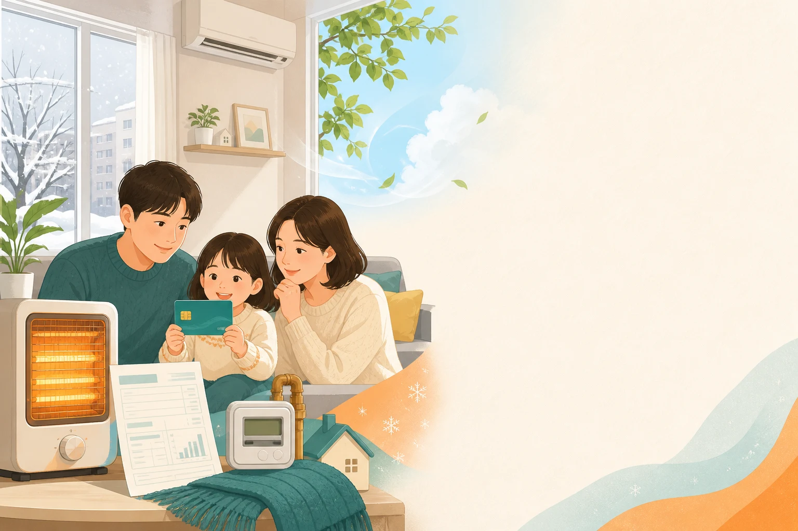

K-패스 환급액은 단순히 한 번 탄 금액만 보는 제도가 아닙니다. 월 15회 이상 이용했는지, 하루 2회와 월 60회 한도에 걸리는지, 일반·청년·다자녀·저소득층 중 어떤 환급률을 적용받는지에 따라 결과가 달라집니다. 2026년에는 모두의 카드가 더해져 기본 정률 환급과 기준금액 초과분 환급 중 더 유리한 방식이 적용될 수 있습니다.
목차
지원 대상

기본 가입 대상
사업 참여 지자체에 주민등록된 만 19세 이상 주민이 기본 대상입니다. K-패스 또는 모두의 카드를 발급받고 앱이나 홈페이지에 등록해야 실적이 쌓이며, 주소지 검증 결과에 따라 적용 가능 여부가 달라질 수 있습니다.
우대 환급률 대상
청년, 다자녀 가구, 저소득층, 어르신 우대 유형은 일반보다 높은 환급률을 받을 수 있습니다. 다만 저소득층 정보는 앱이나 홈페이지에서 신청해 정상 판정을 받아야 적용됩니다.
지원 금액
기본 환급률 계산
월 15회 이상 이용하면 일반은 이용금액의 20%, 청년과 2자녀 가구, 어르신 우대 유형은 30%, 3자녀 이상은 50%, 저소득층은 53.3%를 기준으로 환급액을 계산합니다. 예를 들어 월 환급 대상 교통비가 80,000원이고 일반 유형이면 단순 계산으로 16,000원이 기준 환급액입니다.
20만 원 초과 구간
월 대중교통 이용금액이 20만 원을 넘는 경우에는 초과 금액의 50%만 적용해 지급하는 기준이 있습니다. 경기, 인천, 경남, 울산처럼 예외로 안내되는 지역도 있으므로 고액 이용자는 주소지 기준과 앱 계산 결과를 함께 봐야 합니다.
신청 기간
K-패스 자체는 상시 등록해 이용하는 방식입니다. 2026년에는 모두의 카드와 고유가 지원 관련 한시 기준이 함께 안내되어 있으므로, 월별 환급을 계산할 때 해당 월의 공지를 확인하는 것이 좋습니다. 카드사 지급 시점은 다음 달 초 영업일 기준으로 처리됩니다.
신청 방법
카드 등록 먼저 하기
카드사나 은행에서 K-패스 또는 모두의 카드를 발급받은 뒤 K-패스 앱이나 홈페이지에서 회원가입과 카드 등록을 마칩니다. 등록 전에는 내가 쓰는 카드가 환급 대상 카드인지 알기 어렵기 때문에 실적을 쌓기 전에 상태를 확인하세요.
월말에는 앱 내역 확인
월 15회, 하루 2회, 월 60회 한도는 앱 적립 내역에서 확인하는 편이 가장 명확합니다. 월 60회를 초과하면 이용금액이 높은 순서로 60회까지 반영되는 방식으로 안내됩니다.
필요 서류
일반 이용자는 본인인증과 카드번호, 주소지 확인 정보가 핵심입니다. 우대 유형은 청년 나이, 다자녀 정보, 저소득층 자격처럼 추가 확인이 필요할 수 있습니다. 자동 확인이 되지 않으면 공적 증명자료를 요구받을 수 있습니다.
주의사항
K-패스 환급액은 카드사 할인, 지역별 추가 혜택, 모두의 카드 기준금액 적용 여부에 따라 앱에서 보이는 금액과 카드 명세서 반영 시점이 다르게 느껴질 수 있습니다. 30분 이내 환승은 하나의 이용으로 묶일 수 있고, 다른 카드로 결제한 이용분은 등록 카드 실적에 합산되지 않을 수 있습니다.
자주 묻는 질문
월 15회를 채우지 못하면 환급이 전혀 없나요?
기본 지급 기준은 월 15회 이상 이용입니다. 다만 가입 첫 달은 15회 미만이어도 지급될 수 있다고 안내되므로, 첫 달에는 앱의 적립 내역을 따로 확인하세요.
하루에 여러 번 타면 전부 적립되나요?
K-패스는 하루 최대 2회까지 적립됩니다. 하루 2회를 넘겨 이용하면 이용금액이 높은 순서로 2회까지 반영되는 방식으로 안내됩니다.
공식 신청처와 문의처
환급 계산의 최종 기준은 K-패스 앱, 공식 홈페이지, 카드사 지급 안내입니다. 이용 횟수와 금액이 예상과 다르면 먼저 등록 카드와 주소지 상태를 확인하고, 이후 K-패스 고객센터 또는 카드사 고객센터에 문의하세요. 최종 확인일은 2026년 8월 28일입니다.